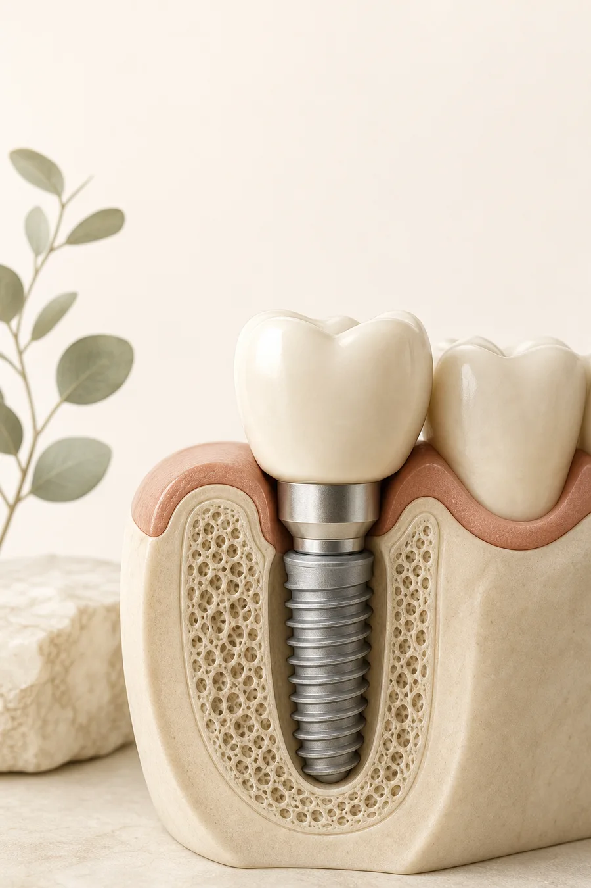

بررسی وضعیت دهان
در معاینه، فضای بیدندانی، سلامت لثه و دندانهای اطراف بررسی میشوند. تصویربرداری تنها در صورت نیاز و با توضیح دلیل آن به برنامهٔ ارزیابی اضافه میشود.
دندانپزشک در پیروزی کلینیک نهال
اگر برای جایگزینی یک یا چند دندان در محدودهٔ پیروزی بهدنبال معاینهٔ ایمپلنت هستید، دکتر نیما محبوبی در کلینیک دندانپزشکی نهال پذیرای مراجعهکنندگان است. ارزیابی با معاینهٔ دهان، بررسی سوابق پزشکی و در صورت نیاز تصویربرداری آغاز میشود؛ امکان و روش درمان پس از بررسی شرایط هر فرد مشخص خواهد شد.
برای رزرو معاینهٔ اولیه با مطب تماس بگیرید. در همان تماس میتوانید دربارهٔ زمان حضور، مدارک لازم و مسئول هر مرحله سؤال کنید.

معاینهٔ ایمپلنت
جستوجوی «بهترین دکتر ایمپلنت در پیروزی» معمولاً از یک نیاز عملی شروع میشود: پیدا کردن پزشک، مطب قابلدسترسی و راه رزرو معاینه. این صفحه اطلاعات دکتر نیما محبوبی و کلینیک نهال را در کنار توضیح روند مراجعه آورده است؛ عنوان «بهترین» را بهعنوان رتبهبندی قطعی ادعا نمیکند.
سلامت لثه، استخوان فک، دندانهای مجاور و سوابق پزشکی در انتخاب روش و زمان درمان نقش دارند. طرح مناسب برای هر بیمار میتواند متفاوت باشد.
در معاینه، فضای بیدندانی، سلامت لثه و دندانهای اطراف بررسی میشوند. تصویربرداری تنها در صورت نیاز و با توضیح دلیل آن به برنامهٔ ارزیابی اضافه میشود.
اگر چند راه برای جایگزینی دندان قابلبررسی باشد، دربارهٔ دلیل پیشنهاد، محدودیتها، مراحل، زمان تقریبی و مراقبت هر روش سؤال کنید. انتخاب نهایی به شرایط شخصی شما بستگی دارد.
پیش از شروع بپرسید چه کسی معاینه، کاشت پایه، ساخت روکش و پیگیری را انجام میدهد و برای هر مرحله چگونه با مطب هماهنگ خواهید شد.
اطلاعات این صفحه راهنمای عمومی است و جای معاینه، تشخیص یا طرح درمان اختصاصی را نمیگیرد.
دربارهٔ پزشک
دکتر نیما محبوبی در پروفایل عمومی نوبت با عنوان «جراح ـ دندانپزشک» و شمارهٔ نظام پزشکی ۱۳۸۴۵۳ معرفی شده و کلینیک دندانپزشکی نهال را محل فعالیت در محدودهٔ پیروزی درج کرده است. پروفایل، هویت پزشک را تأییدشده نشان میدهد.
در بخش اطلاعات تکمیلی همان پروفایل، از انتشار بیش از بیست مقاله در مجلات نمایهشده در ISI و PubMed، دریافت عنوان محقق دانشجوی برگزیده در جشنوارهٔ تحقیقاتی رازی در سال ۱۳۸۹ و عضویت در بنیاد ملی نخبگان یاد شده است. این موارد به نقل از پروفایل عمومی نوبت درج شدهاند؛ برای استفاده در نسخهٔ رسمی سایت، بهتر است جزئیات با پزشک و مدارک مربوط تطبیق داده شوند.
ایمپلنت در فهرست خدمات پروفایل نوبتدهی و دکترتو آمده است. معرفی این خدمت به معنی مناسببودن ایمپلنت برای همه یا تأیید نتیجهای مشخص نیست؛ معاینه و بررسی وضعیت بیمار مبنای تصمیم درمانی خواهد بود.
گالری اینستاگرام کلینیک نهال
پستهای زیر مستقیماً از حساب عمومی @nahaldentalclinic بارگذاری میشوند. موضوع آنها مطابق کپشن همان پست است؛ همهٔ تصاویر، درمان ایمپلنت یا کار انجامشده توسط دکتر محبوبی نیستند.
مشاهدهٔ پست در اینستاگرام
کپشن این پست به تکنیک لایهگذاری ونیر کامپوزیت اشاره میکند. برای دیدن تصویر و متن کامل، پست اصلی را باز کنید.
مشاهدهٔ پست در اینستاگرام
این پست دربارهٔ لمینیت سرامیکی دندانهای قدامی فک بالا است؛ شرح یک نمونه، پیشبینی نتیجهٔ درمان برای دیگران نیست.
مشاهدهٔ پست در اینستاگرام
در کپشن، انتخاب رنگ طبیعی و تکنیک لایهگذاری برای ونیر کامپوزیت توضیح داده شده است.
مشاهدهٔ پست در اینستاگرام
پست، ونیر کامپوزیت هشت دندان قدامی فک بالا را توصیف میکند؛ جزئیات و تصویر در صفحهٔ اصلی کلینیک است.
مشاهدهٔ پست در اینستاگرام
کپشن از ترکیب بریج سهواحدی زیرکونیومی و لمینیت IPS e.max برای شرایط همان مراجعهکننده میگوید؛ این مورد ایمپلنت نیست.
مشاهدهٔ پست در اینستاگرام
کپشن دربارهٔ درمان ریشه و روکش زیرکونیوم است و توضیح میدهد انتخاب روکش به بافت سالم باقیمانده و شرایط دندان وابسته است.
این گالری از پستهای عمومی حساب کلینیک استفاده میکند و هر کارت به پست اصلی پیوند دارد. اینستاگرام ممکن است برای نمایش محتوا ورود به حساب بخواهد یا آن را در بعضی مرورگرها بارگذاری نکند؛ در آن صورت از پیوند «مشاهدهٔ پست» استفاده کنید. کپشنهای حساب کلینیک، مسئول درمان هر مورد را در همهٔ پستها بهطور یکسان مشخص نمیکنند؛ به همین دلیل، تصاویر بهعنوان نمونهٔ قطعی کار یک پزشک یا نتیجهٔ تضمینشده معرفی نشدهاند.
آیا ایمپلنت برای من مناسب است؟
اگر یک یا چند دندان را از دست دادهاید، دندانی لق یا شکسته دارید که امکان نگهداری آن نیازمند بررسی است، یا پس از کشیدن دندان دربارهٔ جایگزینی آن فکر میکنید، این موضوعها را در جلسهٔ معاینه مطرح کنید.
این موارد فقط دلیل مراجعه برای بررسیاند و به معنی نیاز یا مناسببودن قطعی ایمپلنت نیستند. در مشاوره میتوان دربارهٔ روشهای ممکن و مزایا و محدودیتهای هر گزینه سؤال کرد.
برای یک فضای بیدندانی ممکن است بسته به تعداد دندانهای ازدسترفته، وضعیت دندانهای کناری و شرایط فک، گزینههایی مانند ایمپلنت و روکش، بریج متکی بر دندانهای مجاور یا پروتز متحرک مطرح شوند. هیچیک برای همه بهترین انتخاب نیست. بخواهید پزشک توضیح دهد هر گزینه چه آمادهسازی، زمان، مراقبت و محدودیتی دارد و چرا با شرایط شما سازگارتر است.
اگر هنوز دندان آسیبدیدهای در محل وجود دارد، پرسش را فقط به «ایمپلنت انجام بدهم یا نه؟» محدود نکنید. بپرسید آیا امکان نگهداری دندان هست، چه بررسیهایی برای تصمیم لازم است و اگر قرار به کشیدن باشد، چه زمانی باید دربارهٔ جایگزینی آن برنامهریزی کرد. این گفتوگو کمک میکند تصمیم عجولانه نگیرید.
جایگزینی دندان از دسترفته
اگر برای ایمپلنت دندان در پیروزی به مشاوره میروید، بهتر است دربارهٔ راههای دیگر هم سؤال کنید. انتخاب نهایی به معاینه، تعداد دندانهای ازدسترفته، وضعیت دندانهای مجاور و شرایط عمومی شما بستگی دارد.
در این روش، پایه در استخوان فک قرار میگیرد و پس از طی مراحل لازم، بخش روکش دندان به آن متصل میشود. پزشک باید بررسی کند آیا استخوان و بافتهای اطراف برای این برنامه مناسباند، چه زمانبندیای در نظر گرفته میشود و چه مراقبتهایی لازم خواهد بود. ایمپلنت برای هر فرد یا هر فضای بیدندانی الزاماً بهترین پاسخ نیست و تصمیم به ارزیابی دقیق وابسته است.
بریج میتواند فضای خالی را با تکیه بر دندانهای مجاور بازسازی کند؛ نوع آمادهسازی و مناسببودن آن به سلامت و وضعیت همان دندانها بستگی دارد. در پستهای صفحهٔ نهال، یک نمونهٔ توضیحدادهشده ترکیب بریج زیرکونیومی و لمینیت را برای شرایط همان مراجعهکننده توصیف میکند. این مثال فقط محتوای منتشرشدهٔ کلینیک است و نه توصیه برای شما؛ از پزشک بپرسید آیا بریج برای وضعیت شما قابلبررسی است یا خیر.
در بعضی شرایط، پروتز متحرک هم در گفتوگوی درمانی مطرح میشود. شیوهٔ استفاده، تمیزکردن، پایداری و نیاز به تنظیم را از پزشک بپرسید و بررسی کنید هر گزینه در فعالیتهای روزمره چه تفاوتی ایجاد میکند. این صفحه نمیتواند بدون معاینه گزینهای را پیشنهاد یا رد کند؛ هدف این است که در جلسهٔ مشاوره پرسشهای کاملتری داشته باشید.
از پزشک بخواهید گزینهها را با یک معیار ثابت توضیح دهد: چه کاری انجام میشود، به چه دلیلی، چه مراجعات و مراقبتهایی لازم دارد، چه محدودیت یا ریسکی باید در نظر گرفت و کدام اقلام در برآورد هزینه آمدهاند. اگر پاسخ به تصویربرداری یا درمان دیگری وابسته است، بپرسید چه زمانی نتیجهٔ بررسی در دسترس خواهد بود. لازم نیست تصمیم را در همان جلسه بگیرید؛ میتوانید اطلاعات را یادداشت کرده و برای تصمیم آگاهانه مرور کنید.
از تماس تا پیگیری
آشنایی با مسیر معمول کمک میکند بدانید در هر مرحله چه چیزی را روشن کنید؛ جزئیات و زمانبندی پس از معاینه و بر اساس شرایط هر فرد تعیین میشود. برای ایمپلنت در پیروزی، تماس اولیه فقط برای رزرو و پرسیدن مدارک یا هزینهٔ ویزیت است؛ تشخیص و انتخاب روش باید در جلسهٔ درمانی انجام شود.
هنگام تماس، دلیل مراجعه و نیاز اصلیتان را بگویید. فهرست داروها، بیماریهای زمینهای و تصاویر یا سوابق دندانپزشکی قبلی را در صورت دسترسی برای ویزیت آماده کنید. اگر دندان تازه کشیده شده یا درد و تورم دارید، زمان شروع و تغییر علائم را هم یادداشت کنید و هنگام رزرو بپرسید برای ویزیت نخست چه مدارکی لازم است.
دندانها، لثه، وضعیت دهان و سوابق پزشکی بررسی میشوند. اگر برای ارزیابی استخوان یا برنامهریزی، تصویربرداری لازم باشد، نوع و دلیل آن در روند معاینه مشخص میشود. میتوانید بپرسید تصویر چه اطلاعاتی به معاینه اضافه میکند، آیا تصویرهای قبلی قابل استفادهاند و آیا باید آن را پیش از مراجعه تهیه کنید یا پس از ارزیابی پزشک.
دربارهٔ گزینههای درمان، نیاز احتمالی به کشیدن یا اقدامات تکمیلی، ترتیب جلسات و مسئول هر مرحله سؤال کنید. پیش از تصمیم، اجزای هزینه و موارد جداگانه را بخواهید. اگر طرح شامل پیوند، روکش یا درمان دیگری است، علت هر اقدام، ترتیب آن و گزینههای جایگزین را به زبان روشن درخواست کنید؛ برای تصمیمگیری فرصت بخواهید و پاسخها را یادداشت کنید.
اگر پس از ارزیابی ایمپلنت انتخاب شود، زمان و شیوهٔ کاشت بر پایهٔ طرح درمان توضیح داده میشود. دورهٔ بهبود در افراد یکسان نیست؛ دستورهای اختصاصی پس از درمان را از تیم درمان بگیرید. پیش از اقدام، دربارهٔ داروهای تجویزشده، تغذیه و بهداشت در روزهای نخست، زمان تماس مجدد و نشانههایی که نیازمند تماس با کلینیک هستند سؤال کنید؛ دستور عمومی اینترنتی را جایگزین نسخهٔ پزشک نکنید.
پس از طیشدن مرحلهٔ لازم، روکش متناسب با طرح درمان ساخته و نصب میشود. تنظیم، بررسی وضعیت لثه و عملکرد روکش و مراجعههای بعدی بخشی از پیگیری درماناند. زمان نصب روکش را از پیش قطعی فرض نکنید؛ پزشک پس از بررسی روند بهبود آن را تعیین میکند. برای مراقبت بلندمدت نیز دربارهٔ شیوهٔ تمیزکردن اطراف روکش و تناوب معاینه سؤال کنید.
برای اینکه تماس دربارهٔ ایمپلنت در پیروزی به هماهنگی روشنتری برسد، این اطلاعات را آماده داشته باشید:
این شرح، مسیر کلی و آموزشی است؛ ممکن است ترتیب مراحل یا نیاز به هر اقدام بر اساس شرایط بیمار و نظر پزشک تغییر کند.
هزینه و شفافیت
هزینه برای همهٔ بیماران یکسان نیست و به تعداد دندانها، وضعیت دهان و فک، اجزای درمان و اقدامهای تکمیلی موردنیاز بستگی دارد. برآورد دقیق پس از معاینه و مشخصشدن طرح درمان امکانپذیر است.
در جلسهٔ مشاوره بخواهید اجزای هزینه—از جراحی و پایه تا اباتمنت، روکش و درمانهای احتمالی—به زبان روشن توضیح داده شوند. این کار کمک میکند بدانید هر برآورد دقیقاً چه خدماتی را در بر میگیرد.
برای مقایسهٔ برآوردها، فقط رقم نهایی را کنار هم نگذارید. روشن کنید چه برند و قطعهای پیشنهاد شده، هزینهٔ روکش و مراحل پروتز داخل برآورد است یا نه، تصویربرداری جداگانه محاسبه میشود یا خیر، و در صورت نیاز به درمان تکمیلی چه تغییری در برنامه و هزینه رخ میدهد. اگر شرایط پرداخت یا ضمانتی مطرح میشود، جزئیات و استثناهای آن را کتبی از مطب بخواهید؛ این صفحه هیچ نرخ یا تعهد مالی اعلام نمیکند.
برای هماهنگی معاینه به اطلاعات مطب برویدهنگام دریافت برآورد، بپرسید هزینهٔ اعلامشده شامل جراحی، پایه، اباتمنت و روکش هست یا هر مورد جداگانه محاسبه میشود؛ تصویربرداری و درمانهای تکمیلی نیز ممکن است به طرح درمان اضافه شوند. تاریخ اعلام و مدت اعتبار برآورد را هم یادداشت کنید.
پرسشهای پرتکرار
پاسخها راهنمای عمومیاند؛ تشخیص، زمانبندی و توصیهٔ درمانی برای هر فرد پس از معاینه مشخص میشود.
خیر. مناسببودن ایمپلنت به وضعیت لثه و استخوان، سلامت عمومی، دندانهای باقیمانده و داروهای مصرفی بستگی دارد. پزشک پس از معاینه و بررسیهای لازم دربارهٔ امکان درمان یا گزینههای دیگر توضیح میدهد.
زمان درمان به تعداد دندانها، وضعیت استخوان و لثه و نیاز به اقدامهای تکمیلی بستگی دارد. ممکن است درمان در چند مرحله انجام شود؛ برنامهٔ زمانی فردی پس از معاینه و بررسی تصویربرداری اعلام میشود.
خیر. پیوند استخوان یا سینوسلیفت فقط در بعضی شرایط و پس از بررسی حجم و کیفیت استخوان مطرح میشود. نیاز به آن را نمیتوان بدون ارزیابی مشخص کرد؛ از پزشک بخواهید دلیل پیشنهاد را توضیح دهد.
نحوهٔ تقسیم مسئولیتها ممکن است در مطبها و طرحهای درمانی متفاوت باشد. پیش از شروع بپرسید چه کسی معاینه، کاشت پایه، مراحل پروتز و پیگیری را بر عهده دارد و برای هر مرحله به کجا مراجعه میکنید.
هزینه پس از مشخصشدن تعداد ایمپلنتها، نوع قطعات و روکش و درمانهای جانبی قابل برآورد است. از مطب بخواهید اجزای هزینه، موارد جداگانه و تاریخ اعتبار هر برآورد را روشن کند.
در زمان جراحی، روشهای کنترل درد متناسب با شرایط بیمار در نظر گرفته میشوند؛ میزان ناراحتی پس از درمان به شرایط فرد و نوع اقدام بستگی دارد. دستورهای مراقبتی و راه تماس در صورت بروز مشکل را از تیم درمان دریافت کنید.
فهرست داروهای مصرفی، سابقهٔ بیماریهای مهم و تصاویر یا سوابق دندانپزشکی قبلی را اگر در دسترس دارید همراه ببرید. این اطلاعات به گفتوگوی دقیقتر کمک میکنند؛ برای مدارک خاص، هنگام رزرو از مطب سؤال کنید.
برای هماهنگی معاینه میتوانید با شمارههای درجشده تماس بگیرید یا پروفایل نوبتدهی را ببینید. پیش از مراجعه، نوبت، نشانی و ساعت حضور را با مطب تأیید کنید؛ راههای تماس در بخش آدرس آمدهاند.
پاسخ برای همه یکسان نیست. تعداد دندانهای ازدسترفته، سلامت دندانهای مجاور، شرایط استخوان و لثه، نیازهای فرد و امکان رعایت مراقبتها در انتخاب نقش دارند. از پزشک بخواهید گزینهها را با مزایا و محدودیتهای هرکدام برای وضعیت خودتان مقایسه کند.
زمانبندی به وضعیت محل دندان، استخوان و لثه و ارزیابی پزشک بستگی دارد؛ نمیتوان برای همه یک زمان واحد پیشنهاد کرد. اگر دندان کشیده شده یا قرار است کشیده شود، زمان مناسب بررسی و جایگزینی را در ویزیت بپرسید.
در پستهای قابلمشاهدهٔ صفحهٔ کسبوکار، موضوعاتی مانند ونیر کامپوزیت، لمینیت سرامیکی، روکش زیرکونیوم و بریج دیده میشود. این موارد محتوای صفحهٔ کلینیک هستند و بهتنهایی ثابت نمیکنند هر درمان را کدام پزشک انجام داده یا نتیجهٔ مشابهی برای فرد دیگری به دست میآید.
مراقبت فوری را مطابق دستور اختصاصی پزشک انجام دهید و برای تمیزکردن اطراف روکش و مراجعات دورهای برنامه بگیرید. شیوه و زمان مناسب به مرحلهٔ درمان و شرایط شما وابسته است؛ اگر دربارهٔ مسواک، نخ یا ابزارهای تمیزکننده سؤال دارید، از تیم درمان بخواهید روش را متناسب با طرح خودتان توضیح دهد.
این موضوع را پذیرش یا پزشک پس از دانستن نوع تصویر و زمان تهیهٔ آن مشخص میکند. تصویرهای قبلی را در صورت دسترسی همراه ببرید، اما پیش از تهیهٔ تصویربرداری تازه از مطب بپرسید چه نوعی لازم است و آیا باید ابتدا معاینه شوید.
خیر. پستهای شبکهٔ اجتماعی شرایط یک مراجعهکننده را نشان میدهند و تضمینی دربارهٔ نتیجهٔ فرد دیگر نمیدهند. سلامت دهان، نیاز درمانی و پاسخ بدن متفاوت است؛ طرح و پیشآگهی را فقط پس از ارزیابی شخصی با پزشک بررسی کنید.
برای برآورد دقیق ابتدا باید تعداد دندانها، اجزای درمان و نیاز احتمالی به اقدامات تکمیلی مشخص شود. هنگام تماس میتوانید دربارهٔ هزینهٔ ویزیت و شیوهٔ اعلام برآورد سؤال کنید؛ مبلغ نهایی را بر پایهٔ طرح درمان مکتوب و مواردی که پوشش میدهد بررسی کنید.
نشانی درجشده در منابع عمومی: تهران، خیابان پیروزی، جنب پمپبنزین سلیمانیه، کوچهٔ مشایخی، پلاک ۵۹۷، طبقهٔ سوم، واحدهای ۷ و ۸. چون اطلاعات فهرستها ممکن است تغییر کند، پیش از حرکت نشانی و ساعت حضور را با شمارهٔ کلینیک تأیید کنید.
مطب در محدودهٔ پیروزی
برای رزرو معاینهٔ ایمپلنت با دکتر نیما محبوبی در پیروزی، کلینیک دندانپزشکی نهال در خیابان پیروزی، جنب پمپبنزین سلیمانیه و کوچهٔ مشایخی معرفی شده است. نشانی کامل در کارت روبهرو آمده و دو شماره برای تماس درج شدهاند.
هنگام تماس بگویید برای ارزیابی جایگزینی دندان و مشاورهٔ ایمپلنت نوبت میخواهید؛ از پذیرش بپرسید کدام پزشک معاینه میکند، برای جلسهٔ اول چه مدارکی بیاورید و آیا پیش از مراجعه تصویربرداری لازم است یا خیر. این پرسشها رزرو را هدفمند میکنند و از انجام بررسیهای غیرضروری پیش از نظر پزشک جلوگیری میکنند.
پیش از حرکت، شمارهٔ واحد، ساعت حضور و نوبت را تأیید کنید. اگر با حملونقل عمومی یا خودرو میآیید، مسیر روز را روی نقشه بررسی کنید؛ دربارهٔ پارکینگ، آسانسور یا دسترسی بدون پله نیز میتوانید تلفنی سؤال کنید. نشانی آنلاین و شرایط دسترسی ممکن است تغییر کرده باشد.
کلینیک دندانپزشکی نهال
تهران، خیابان پیروزی، جنب پمپبنزین سلیمانیه (جایگاه ۱۲۳)، کوچهٔ مشایخی، پلاک ۵۹۷، طبقهٔ سوم، واحدهای ۷ و ۸
دکترتو و یاندکسمپ پلتفرمهای شخص ثالث هستند. ساعت کاری، نوبتهای قابلرزرو و اطلاعات مکانی ممکن است تغییر کنند.
این صفحه پیشنمایش غیررسمی طراحی است. پیش از استفاده بهعنوان سایت رسمی پزشک، موارد زیر را با پزشک یا مسئول مجاز مطب تأیید کنید: